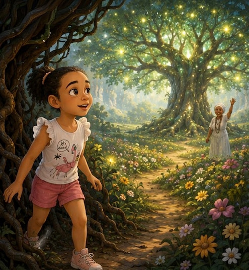
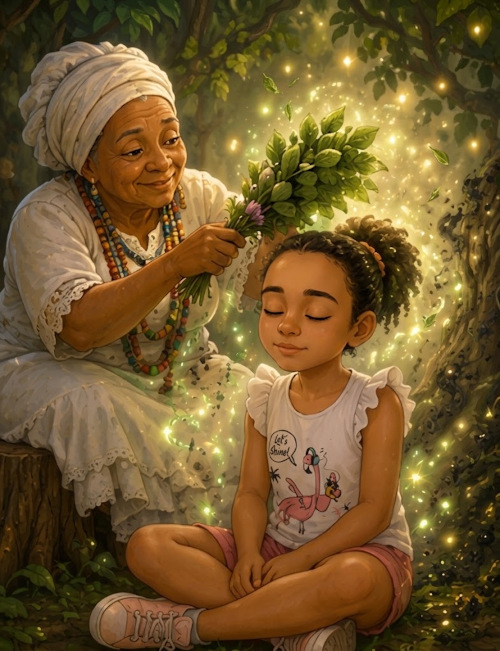
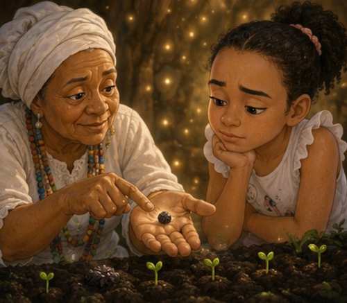
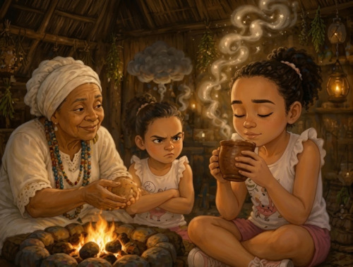
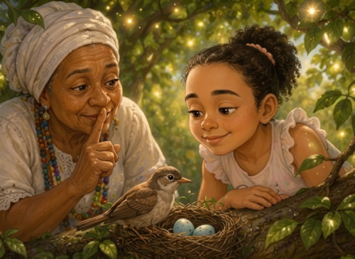

Angélica é uma garota de 10 anos que vive um momento delicado, assustada por pesadelos e angústias espirituais que ninguém consegue explicar. Em suas noites, ela fecha os olhos e desperta dentro de um sonho misterioso e acolhedor, onde encontra a Vovó Maria Conga à sombra de uma frondosa árvore de Jurema Sagrada. Ao longo de sete encontros em seu mundo dos sonhos, Angélica passa por benzimentos, aprende sobre a força da natureza e recebe valiosas lições de vida que transformam seus medos em coragem, perdão e amor.
Capítulo 1: O Quintal Sem Fim

Eu não sabia se estava dormindo ou acordada, mas o chão debaixo dos meus pés descalços parecia feito de terra bem macia e quentinha. O vento trazia um cheirinho gostoso de folhas e de chuva caindo na terra. Na minha frente, embaixo de uma árvore gigante cheia de flores e galhos trançados, uma velhinha de cabelos brancos como algodão e um sorriso bem doce me esperava. Ela segurava um galho verde e acenou devagar.
Venha, minha filha. Não precisa ter medo de pisar nesta terra disse ela, com uma voz tão calma que parecia um abraço bem quentinho.
Onde eu estou, Vovó? E por que as coisas que me davam medo sumiram de repente? perguntei, dando um passo devagar.
Você está no seu próprio sonho, Angélica, debaixo da minha Jurema. Aqui as coisas ruins do mundo não entram, e a gente aprende a cuidar do coração.
O medo vai embora quando a gente busca a paz por dentro e aceita receber ajuda com o coração aberto.
Capítulo 2: O Benzimento de Manjericão

Cheguei mais perto, sentindo o peito apertado por causa dos pesadelos dos últimos dias. A Vovó Maria Conga pediu para eu sentar no chão de terra e tirou do bolso da saia um maço de manjericão bem verde e cheiroso.
Feche os olhos, pequenina pediu a Vovó, passando as folhinhas bem de leve pelos meus ombros e pela minha cabeça.
Vovó, parece que tem uma poeira pesada saindo de mim... O que a senhora está fazendo?
Estou limpando o seu coração, Angélica. Esse manjericão leva embora as coisas ruins, os sustos e o cansaço. O benzimento nada mais é do que o carinho de Deus passado pelas mãos de quem quer o seu bem.
A verdadeira limpeza começa de dentro para fora, e o amor de verdade consegue curar e tirar qualquer peso do nosso peito.
Capítulo 3: As Sementes da Paciência

Na noite seguinte, voltei para aquele mesmo quintal ensolarado do meu sonho. A Vovó Maria me esperava sentada em um toco de madeira. Ela abriu a mão e me mostrou uma sementinha preta e enrugada.
Você sabe o que é isto, Angélica?
Parece uma sementinha comum, Vovó. Ela vai virar uma flor?
Vai sim, minha filha. Mas não hoje e nem amanhã. Ela precisa ficar na terra escura, beber água e esperar o tempo do sol chegar. Você quer que as suas dores sumam num piscar de olhos, mas o nosso coração também precisa de tempo para crescer.
Então eu preciso aprender a esperar sem chorar? perguntei, olhando para baixo.
Precisa aprender a ter paciência com você mesma. A pressa só atrapalha a gente a crescer.
As coisas mais bonitas da vida levam tempo; saber esperar com calma nos deixa mais fortes por dentro.
Capítulo 4: O Segredo da Jurema
Enquanto o vento balançava as folhas da grande árvore, a Vovó Maria Conga se ajoelhou e tocou nas raízes grossas que saíam da terra.
Veja esta árvore, Angélica. É a Jurema Sagrada. Sabe por que as tempestades não conseguem derrubar ela?
Porque ela é muito alta e forte? — chutei, olhando para os galhos.
Não, pequenina. É porque as raízes dela estão bem fundas e presas na terra. A sua família, a sua fé e as coisas boas que você faz são as suas raízes. Quando o medo ou os momentos difíceis tentarem te balançar na vida real, lembre-se de quem você é e do amor que te cerca. Raiz forte não deixa a gente cair.
A nossa força de verdade não está por fora, mas nas coisas boas e no amor que guardamos no coração.
Capítulo 5: O Chá de Serenidade

Cheguei ao quinto sonho chateada. Eu tinha brigado na escola porque uma colega tinha sido chata comigo, e eu só pensava em dar o troco. A Vovó Maria me deu uma canequinha de barro saindo fumaça, com um chá supercheiroso.
Beba devagar, minha filha. Esse chá é para acalmar esse peito quente de raiva.
Mas Vovó, ela não foi legal comigo! Eu tenho direito de ficar brava! reclamei, antes de tomar um gole.
Sentir raiva é como segurar um carvão aceso para jogar nos outros: quem se queima primeiro é você, Angélica. Perdoar não é dizer que o outro está certo, é deixar o seu próprio coração leve e limpo.
Guardar raiva só faz mal para nós mesmos; perdoar é o segredo para deixar o coração leve e livre de mágoas.
Capítulo 6: A Luz das Palavras

Desta vez, o sonho estava bem mais claro. A Vovó Maria me mostrou um ninho de passarinhos na altura dos meus olhos. Os filhotinhos piavam bem baixinho.
Angélica, o que acontece se você gritar bem alto perto deste ninho? perguntou a Vovó.
Os passarinhos vão se assustar e podem até cair, Vovó.
Assim são as nossas palavras, minha filha. Palavras duras assustam e machucam como pedras. Mas palavras doces e carinhosas são como o alimento que a mãe passarinho traz no bico. A partir de hoje, use a sua boca só para construir coisas boas, abençoar e proteger.
As nossas palavras têm muito poder; devemos usar a nossa voz para espalhar paz, carinho e alegria.
Capítulo 7: O Despertar da Coragem
"As grandes transformações da vida não mudam o mundo ao nosso redor, mas transformam a forma como vivemos nele."
No nosso último encontro, a Vovó Maria Conga parecia brilhar com uma luz suave embaixo da árvore. Ela abriu os braços e me deu um abraço demorado, com cheirinho de alfazema e alecrim.
Chegou a hora de você caminhar sozinha no mundo acordado, Angélica disse ela, segurando o meu rosto com suas mãos calejadas e carinhosas.
Mas Vovó, e se os medos voltarem quando eu acordar?
Eles não vão voltar, porque agora você sabe quem é. A cura não estava só no meu benzimento, estava no amor que você deixou entrar no seu peito. Lembre-se: a Jurema e a Vovó sempre estarão com você nas suas orações.
Quando abri os olhos na manhã seguinte, o sol entrava pela janela do meu quarto. O peso no meu peito tinha sumido de vez. Respirei fundo, sorri e tive certeza de que nunca mais estaria sozinha.
Créditos
Agradecimentos: À tradição oral da Jurema Sagrada e à sabedoria dos Pretos Velhos, referências de amor, caridade, acolhimento e simplicidade no imaginário popular brasileiro.
•
Fontes de Pesquisa e Referências Culturais:
o Estudos sobre a Encantaria e os Cultos de Jurema no Nordeste do Brasil (A Jurema como símbolo vegetal e espiritual de cura e ancestralidade).
Tradições dos Benzimentos e da Herbologia Popular Brasileira (O uso de ervas como manjericão, alecrim e alfazema para restauração do equilíbrio energético).
A Figura dos Pretos Velhos na Cultura Popular (Símbolos de paciência, escuta atenta e pedagogia do afeto).